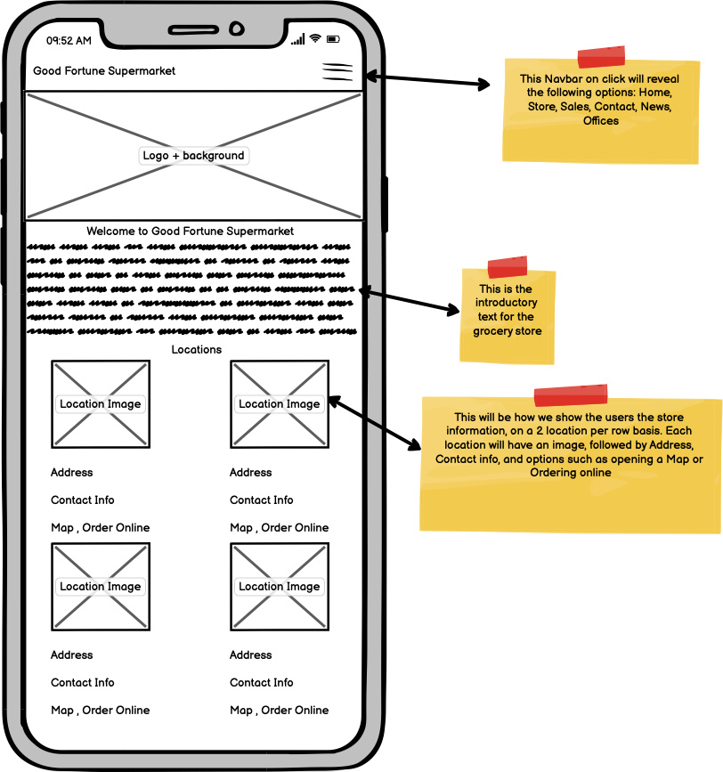
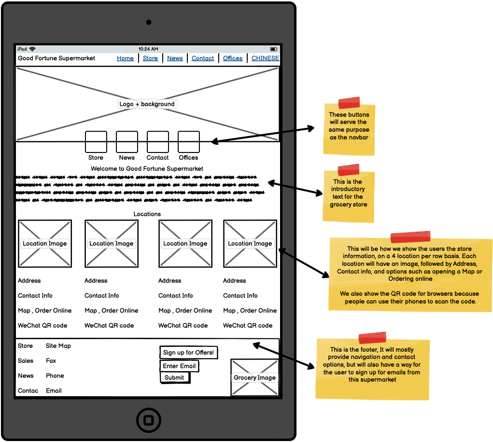
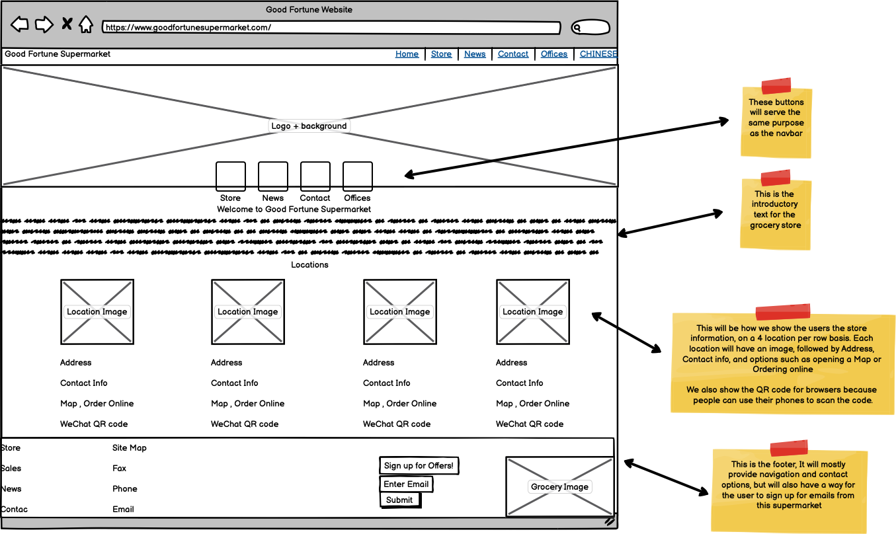
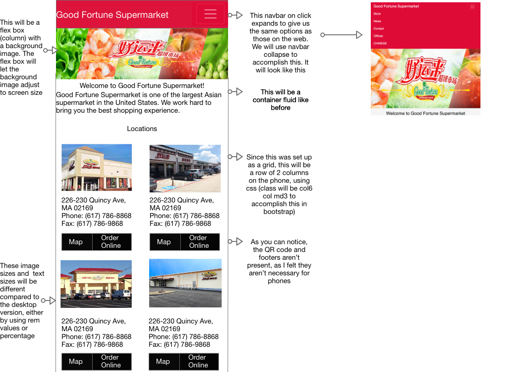
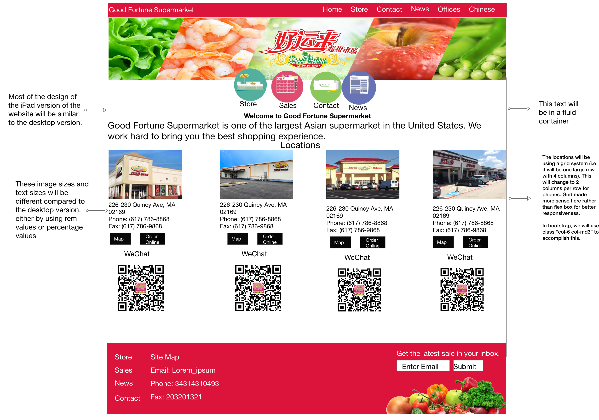
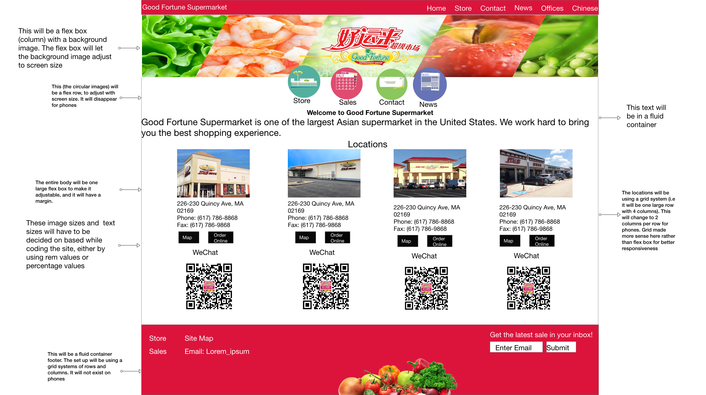
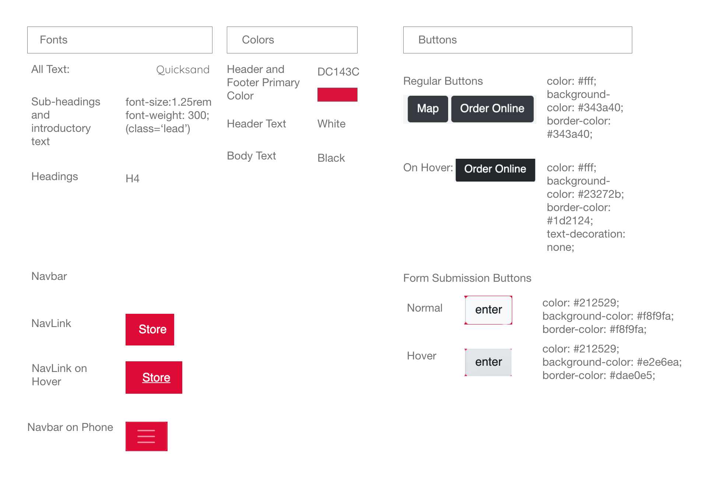

Overview
Good Fortune Supermarket has been one of my favorite places to get groceries, perhaps
even rivaling Trader Joe's in my heart. However, their website sadly isn't as great as their
products.
It is very confusing to navigate, and honestly could be a lot better. Hence, I decided to redesign
it.
Part 1
Here is what the website looked like when I decided to redesign it. Click here to visit it
Why I Decided to Redesign it
I will break down my problems with the website in terms of learnability and
memorability, and then go into if the website is thus usable.
Learnability
- If an user wanted to order online on this website on their first
try, it would be quite hard to accomplish it. The links are hidden within the very large QR
codes that don't have any description. This is something I think shouldn't be the case, and
can easily be replaced with a simple clickable button.
- The method of changing language is hidden very badly at the top
right. This can very easily be replaced by a button to make it more accessible.
- There is no button that can be clicked to submit your email to
subscribe, so a new user wouldn't be able to tell if it worked.
- Under locations it has a warehouse, which may lead new users to
believe it is a store. However, it is also present under offices so it isn't really a store.
This may make a new user go to a random location expecting a store.
- As a new user, looking at the random QR code present below the
locations for the store doesn't make any sense. So, you have to actually scan the code to
figure out what it does.
Memorability
- I definitely think that if an user were to come back to the website
after a break, they wouldn't really recall that clicking a QR code image would be the way to
order. The same goes for the changing language functionality.
- Remembering what the QR codes below the locations do would be
difficult, especially if you aren't used to websites using it in such a manner. A label
would fix this.
Usability
- Overall, I think the Learnability and Memorability of the website is
very low. Thus, I don't think the website is really usable due to the flaws I outlined above
WebAIM and ScreenReader
WebAIM
- According to WebAIM, the website has 24 errors. Most of the errors
seem to be from a lack of alternative texts, empty links, missing form labels. I believe
this makes it unaccessible to a lot of users
ScreenReader
- Navigating the website with a screenreader was very diffcult in my
opinion.
Prototypes and Style Guide
To start off my redesign project, I decided to first start by creating low and hi
fidelity prototypes, as well as the style guide, prior to actually recreating the site.
-
Low Fidelity Prototype
Phone
-

iPad/Tablet
-

Website
-

-
Hi-Fidelity Prototype
Phone
-

iPad/Tablet
-

Website
-

-
Visual Style Guide

Conclusion
Honestly, I'm kind of happy with my rendition of the website. While it is obviously not perfect, I think it is still far better than the current website!